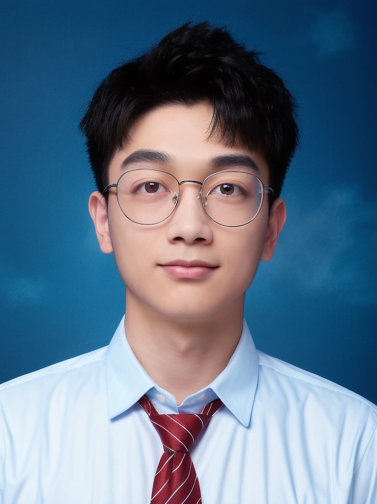

|
Zhang, Rui (张瑞)
|
 |
PhD Candidate,
Department of Physics,
State Key Laboratory of Low Dimensional Quantum Physics,
Frontier Science Center for Quantum Information,
Tsinghua University
100084 Beijing, China
E-mail: zr22@mails.tsinghua.edu.cn
|
About me
I received the B.S. degree from the Tianjin University, in 2018.
I am currently a PhD Candidate with the Department of Physics, Tsinghua University, China.
As a XXX.
Research
Research interests
Recent publications
Probing the activated complex of the F + NH3 reaction via a dipole-bound state
R. Zhang, S.T. Yan, H.W. Song*, H. Guo, and C.G. Ning*.
Nature Communications 15 (1), 3858 (2024) (Feature Image) [pdf]
Photodetachment and Tunneling Dissociation of Cryogenic Double-Rydberg Anions NH4−
R. Zhang, J.Y. Chen, S.T. Yan, W.R. Jie, and C.G. Ning*.
The Journal of Physical Chemistry Letters 15, 5612-5617 (2024) [pdf]
Probing the activated complex of the F + NH3 reaction via a dipole-bound state
R. Zhang, S.T. Yan, H.W. Song*, H. Guo, and C.G. Ning*.
Nature Communications 15 (1), 3858 (2024) (Feature Image) [pdf]
Probing the activated complex of the F + NH3 reaction via a dipole-bound state
R. Zhang, S.T. Yan, H.W. Song*, H. Guo, and C.G. Ning*.
Nature Communications 15 (1), 3858 (2024) (Feature Image) [pdf]
Full list of publications in Google Scholar.
News
Reviewer
IEEE Transactions on Neural Networks and Learning Systems
IEEE Transactions on Industrial Informatics
ACM Transactions on Knowledge Discovery from Data
IEEE Access
More details in Publons
Education
M.E., Pattern Recognition and Intelligent Systems, Xiamen University, 06.2016
Awards: Principal Level Scholarship (1st in admission)
Main Courses: Machine Learning, Design of Neural Networks, Digital Image Processing, Time Series Analysis, Pattern Recognition, Data Mining and Its Application, Artificial Intelligent: Theory and Application, Recommender System.
B.E., Automation, Zhejiang University of Science and Technology, 06.2012
Main Courses: C Programming, Embedded Systems, Computer Network and Communication, Computer Control System.
Work experience
Researcher, School of Smart Education, Jiangsu Normal University, 03.2023-Present Research Scientist, AI Research Institute, Hithink RoyalFlush, 06.2019-Present
Research the newest machine learning algorithms and recommender system technology on stocks and hot news
Apply neural network models to drug-target interaction prediction and evaluate the performance
Publish papers and apply for relevant patents for the corporation
Give lessons on Artificial Intelligence and Recommender Systems to the staff
Research Assistant, Big Data Lab, Xiamen University, 09.2016-02.2019
Instructed two undergraduate and three graduate students in scientific research
Tracked, studied, reproduced, and improved up-to-date machine learning methods
Published papers on machine learning and recommender systems
Software Engineer, Dragon SOFT, 07.2013-06.2014
Developed an electronic system of shooting game for an amusement park
Recorded the track of users' behavior from sensors in a database
Built a model analyzing users’ behavior concerning speed, acceleration and number of cylinders
Assistant Engineer, Gold Electronic, 03.2012-07.2012
Cooperated with motor companies, such as Zotye and BYD, on battery management system development
Developed a testing and analytics platform for performance of a lithium battery with C# (real-time data)
Used CAN bus to collect working data of batteries and analyzed the data for balance power
A brief cv.
|